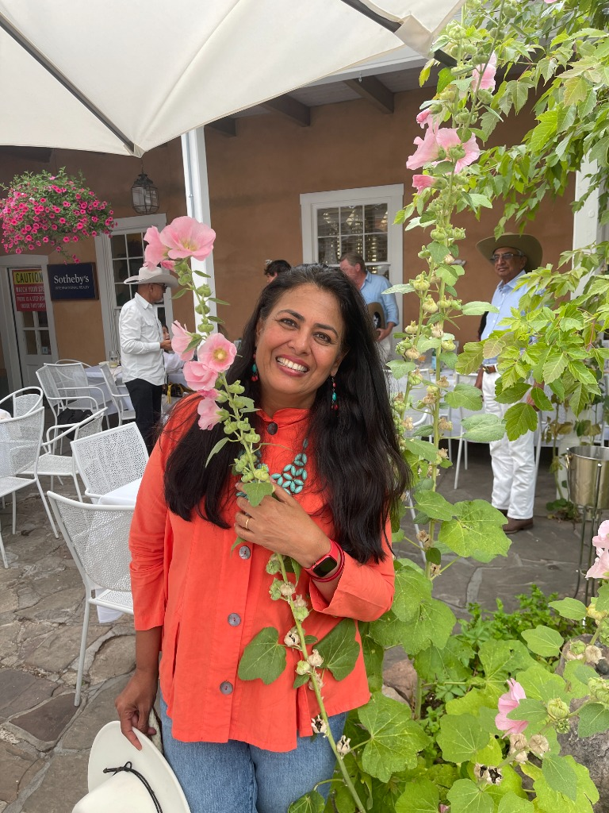
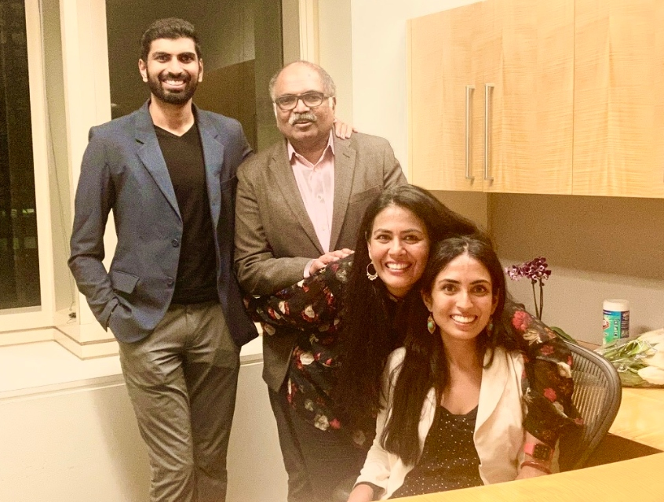
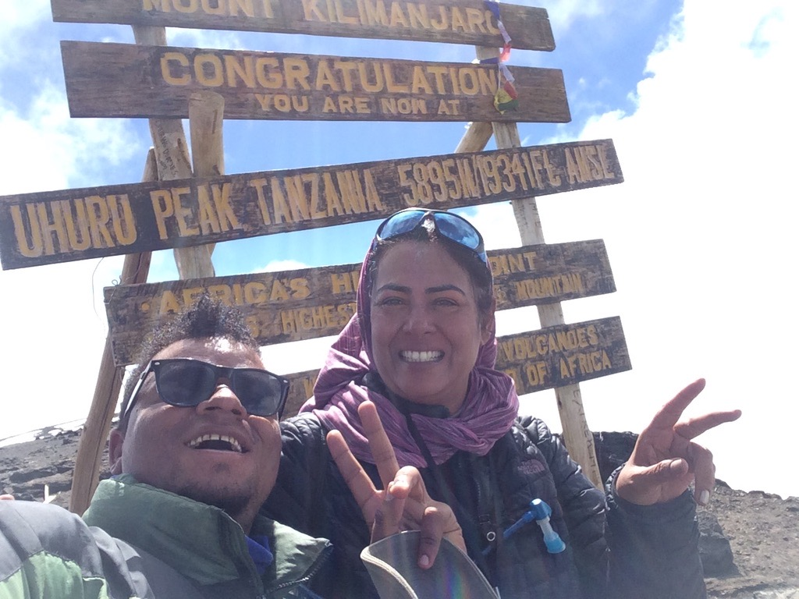
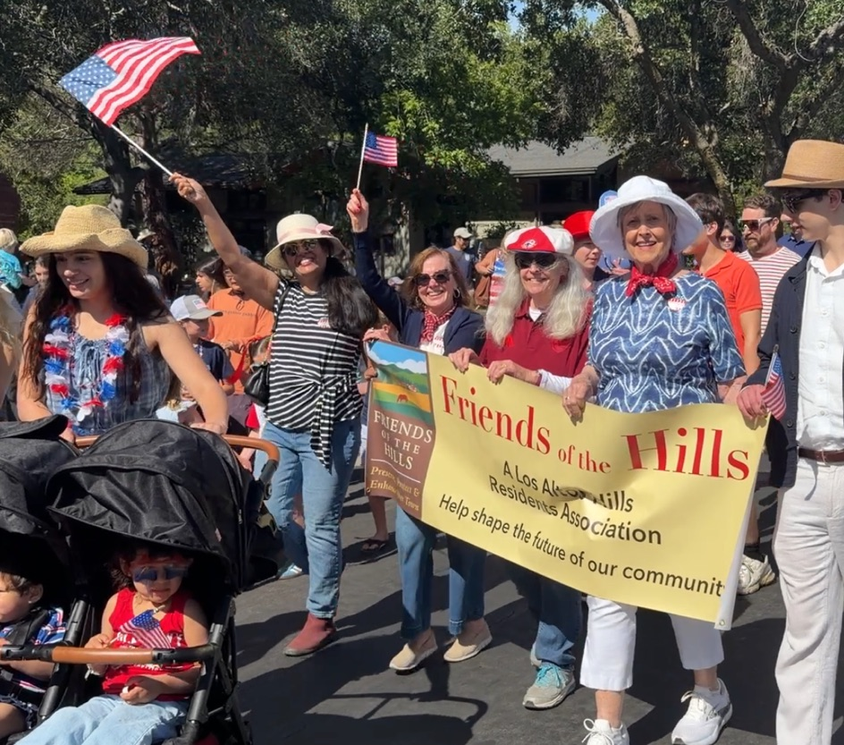
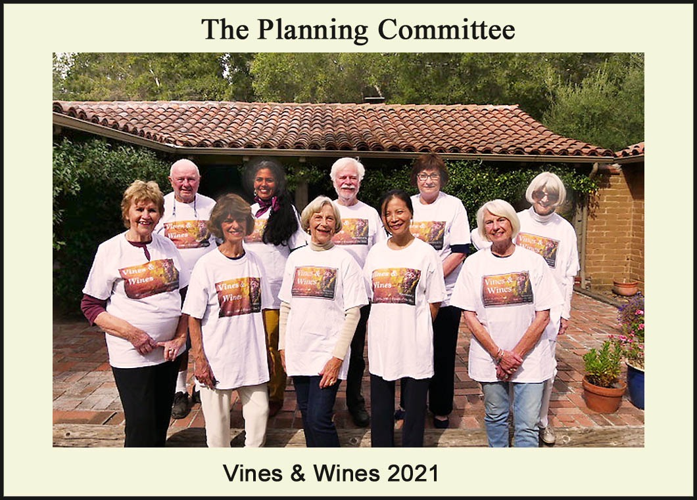

S
SAFETY
Protecting lives, homes and evacuation routes.
Wildfire preparedness, resilient infrastructure and effective emergency response must remain fundamental priorities.
Our Community. Our Voices. Our Future.
Elect
For Los Altos Hills City Council 2026
About Indu
The “Business Owner” title next to my name on the ballot is only one piece of the quilt of my life.
I’m Indu Kadambi. For more than 26 years, Los Altos Hills has been my home and a community I’ve been fortunate to serve. Today, one of the ways I serve is as a Los Altos Hills County Fire District Commissioner.
But this community has given me so much in return. It is where my family has grown, friendships have deepened, and I’ve learned from neighbors with different perspectives. I’m grateful not only for the opportunity to serve, but for all that this community has given my family and me.
I’ve worn many hats: mother, wife, caregiver, educator, business owner, author, historic home preserver, mountaineer, and Fire District Commissioner.
Through our schools, Hills 2000, Friends of the Hills, and other community efforts, I’ve learned that service means showing up, listening, rolling up your sleeves, and getting things done, while respecting our history and different points of view.
When our children were young, our home was often filled with school robotics, music jams, poetry cafés, and hungry teenagers. Climbing Mt. Kilimanjaro later reinforced a lesson those years had already taught me: “Pole, pole,” slowly, slowly. Progress comes step by step, no summit is reached alone, and strong communities are built by people looking out for one another.
Los Altos Hills has given my family and me a home, a community, and a deep sense of belonging. It is only fitting that I give back in that same spirit.

BACKGROUND
“Service, I have learned, is a value best taught by living it.”
— Indu Kadambi
The pandemic was a strange, disconnected time, but it is a powerful reminder how quickly a community can form around a shared need. Stepping up did not just ease someone's burden, it gave my family an anchor and a shared purpose when everything else felt untethered. Human resilience shows up most clearly in acts where giving and receiving blur together into the same thing.


The values and commitments guiding every decision for Los Altos Hills.
People who live here should have a meaningful voice in the decisions that affect their neighborhoods, their community, and their future.
Take the time to understand the facts, the circumstances, and the potential impact before taking action.
Los Altos Hills is a unique community. Solutions should reflect our local character, needs, and values—not simply follow a template designed for somewhere else.
Public service should be about solving problems, serving residents, and doing what is right for the community. It is not advancing a political agenda.
Thoughtful leadership means preserving the character, quality of life, and values that make Los Altos Hills a special place to call home.
Treat taxpayer dollars with care, ask hard questions, and make sure public investments provide lasting value to the community.
Healthy communities require leaders who listen, respect differences, and work toward practical solutions.
Every decision should be considered not only for its immediate impact, but for what it means for the next generation of residents.
Public office is temporary. My responsibility to the community, and to those who come after me, is long-term.
A community's future is shaped by those who actively participate in its present. Over the years, my commitment to Los Altos Hills has grown into a deep understanding of how our town operates, how we balance budgets, and how we protect our neighborhoods.
Serving as Fire Commissioner of Los Altos Hills, prioritizing emergency access, evacuation planning, and the safety of every resident.
As a proud member of Hills 2000 for six years, I have been deeply involved in shaping the decisions that preserve our town's unique character.
Bringing direct experience as a Treasurer and LAH commissioner, she remains deeply interested and involved in rigorous budget planning to ensure Los Altos Hills remains financially strong.
As a Fire Commissioner of Los Altos Hills, I have seen firsthand why land-use decisions in our community cannot be separated from emergency preparedness. Our own General Plan recognizes that Los Altos Hills faces heightened wildfire risk because of its steep hillsides, canyons, vegetation, narrow and winding roads, and neighborhoods with limited points of ingress and egress.
That is why the Town's Safety Element requires that development have an acceptable level of fire protection, adequate water supply, and adequate emergency-vehicle access through roads, streets and driveways, including alternate emergency access for neighborhoods that could otherwise become cut off.
Driveways and access roads must accommodate emergency apparatus, including adequate width, vertical clearance, turning capability and vegetation clearance.
Many Los Altos Hills roads are narrow and two-lane. During a wildfire, those same roads must simultaneously carry outbound residents and inbound fire and law-enforcement vehicles.
Emergency planning should account for cumulative evacuation demand, particularly in neighborhoods with only one or two practical exits.
The Town's emergency-road network exists specifically to reduce the danger of neighborhoods becoming inaccessible if blocked by fire, a fallen tree, utility lines, a collision or another hazard.
Adequate water supply, hydrant availability, water-main capacity and reliability are fundamental components of fire protection.
Steep slopes and canyon conditions can accelerate wildfire behavior while simultaneously limiting apparatus access, turnaround space and evacuation options.
Town evacuation-preparedness guidance calls for defensible space and, among other measures, approximately 20 feet of driveway clearance and 15 feet of vertical clearance for emergency vehicles.
Roads such as El Monte Road, Moody Road and Elena Road have been specifically identified by the Town as important emergency-evacuation routes.
Responsible housing policy and responsible fire-safety policy are not competing objectives. The obligation is to make sure that as our community changes, emergency access, evacuation capacity, water infrastructure and wildfire resilience keep pace with it.
Los Altos Hills has steep terrain, narrow and winding roads, wildfire and evacuation constraints, limited sewer infrastructure, drainage challenges and environmentally sensitive areas. Those realities should shape how housing requirements are implemented.
Local expertise matters. Residents, firefighters, engineers, planners and environmental professionals understand conditions that may not be apparent in a statewide policy framework. Their knowledge should help identify workable sites, appropriate infrastructure improvements and responsible alternatives.
Under SB 9, for example, a qualifying Los Altos Hills parcel may be eligible for a two-unit development or an urban lot split, potentially resulting in as many as four dwellings on what was previously a single parcel. The Town has adopted objective standards governing those projects, specifically to address matters such as design, infrastructure and public safety.
That means the question should not simply be “How many units can we permit?” It should also be:
Higher-intensity development should be evaluated in the context of road capacity, emergency access, evacuation constraints, topography, utilities, water availability and proximity to services.
Parcels with better roadway access, appropriate utility connections and fewer environmental or topographic constraints may be substantially better suited to additional density than isolated hillside properties reached by narrow roads.
The Town already permits ADUs and has adopted state-compliant standards and pre-approved resources to facilitate their construction.
Where state law requires ministerial approval, the Town should make full and careful use of legally permissible objective standards governing matters such as access, setbacks, building placement, height, drainage and site design.
WHAT MATTERS
Protecting lives, homes and evacuation routes.
Wildfire preparedness, resilient infrastructure and effective emergency response must remain fundamental priorities.
Protecting the character and voice of Los Altos Hills.
Preserve our semi-rural heritage while advocating thoughtfully for local interests as regional and state pressures reshape our community.
Stewardship today protects our choices tomorrow.
Spend responsibly, plan for long-term needs and insist on transparency so residents understand where Town resources go and why.
Preserve the legacy. Make the Town future-ready.
Modernize essential infrastructure and services thoughtfully—without sacrificing the open space, independence and character that define Los Altos Hills.
A Message from Indu
Los Altos Hills has been my home for 26 years. I am running for Town Council because I believe residents deserve a real choice and a meaningful voice in the decisions that shape our community.
As a Commissioner of the Los Altos Hills County Fire District, I sit at the decision table as both a resident and a leader. I work on public safety, fiscal responsibility, and long-term planning, with the understanding that good governance requires listening carefully, exercising sound judgment, and taking responsibility for the decisions we make.
My commitment to community began long before public office. I served as Treasurer of Hills 2000 and am one of the founding members of Friends of the Hills, part of a strong team with diverse strengths that has created opportunities for residents to connect, participate, and be heard. I have also volunteered through our schools and Town-wide events, including Vines & Wines.
Los Altos Hills benefits from the dedication of our Council, Town staff, committee members, commissioners, and the many volunteers who give their time and expertise to our community. Effective leadership brings these strengths together with the knowledge and perspectives of residents. Council must listen and engage, but it must also weigh competing priorities, exercise independent judgment, make difficult decisions, and provide clear direction.
Los Altos Hills is a private and understated community. But that should never be mistaken for indifference. Our residents care deeply about their neighborhoods, their Town, and its future. I am stepping forward to make sure their voices are heard.
Our community is unique. Our geography is unique. Our challenges are unique. Our solutions should be thoughtful enough to recognize that.
Before making consequential decisions, we should ask:
State-mandated housing formulas or dense development models designed for urban transit corridors simply do not translate to Los Altos Hills. We lack commercial centers, widespread sewer infrastructure, and major transit hubs. Our solutions must respect our one-acre minimums and rural zoning rather than trying to force urban density into our hillsides.
Los Altos Hills sits entirely within a Wildland-Urban Interface (WUI), meaning wildfire is a constant threat. Any new land-use or development decision must account for our narrow, winding roads, limited evacuation routes, and the ability of fire apparatus to access properties safely. We cannot compromise on emergency preparedness.
We must look at the reality of our infrastructure. Does a proposed project have access to adequate water supply and sewer connections? Does the steep terrain and canyon topography allow for safe construction and emergency turnaround? Theoretical goals mean nothing if the physical reality of the site cannot support them responsibly.
Once our rural character is lost, we cannot get it back. Decisions made today about subdivisions, lot splits, or infrastructure will permanently alter the landscape, traffic patterns, and environmental stability of Los Altos Hills for generations. We must act as stewards for the future, not just react to the pressures of the present.
No one knows a neighborhood better than the people who live there. True community leadership means prioritizing the voices of Los Altos Hills residents over outside developers or regional mandates. Meaningful resident input must be sought before policies are set in stone.
We should never settle for the first proposed solution if it compromises our town's character. Whether it's meeting housing goals through ADUs (Accessory Dwelling Units) that integrate seamlessly into existing properties, or finding smarter ways to manage our budget, there is always a collaborative, locally-tailored alternative that works better for Los Altos Hills.
EXPERIENCE
Los Altos Hills is a special community. Preserving what makes it special requires thoughtful planning, fiscal discipline, respect for residents, and a clear commitment to public safety. Indu’s approach is grounded in public service, financial oversight, community engagement, and long-term decision-making.
Prepared Today. Ready for Tomorrow.
As a Fire Commissioner for the Los Altos Hills County Fire District, Indu has firsthand experience in public safety governance, emergency preparedness, fiscal oversight, and interagency coordination. Her focus includes fire prevention, wildfire preparedness, evacuation planning, emergency response, and community education—with the goal of identifying safety issues before they become emergencies.
Every Public Dollar Matters.
Indu brings direct experience in budget oversight and fiscal stewardship. As a Fire Commissioner, she served on an Ad Hoc Financial Subcommittee to review and strengthen financial oversight. As Treasurer of Hills 2000, she managed budgeting and financial stewardship while supporting community events and civic engagement.
Meet Our Obligations. Protect What Makes Us Special.
Indu believes Los Altos Hills should meet its housing obligations responsibly while understanding the implications for wildfire safety, evacuation, emergency access, water, traffic, infrastructure, wildlife corridors, open space, and the environment. Through Friends of the Hills, she has helped bring residents together around housing issues and encouraged constructive participation in Town decisions.

Listen. Engage. Build Trust.
From PTA and school volunteering to Hills 2000, Friends of the Hills, and Town-wide efforts, Indu has spent decades bringing people together. Her Fire District service has reinforced the importance of working across agencies and jurisdictions, sharing information, listening to different perspectives, and giving residents a meaningful opportunity to participate.
Protect our community. Steward our resources. Plan for the future. Listen to our residents.
Indu brings experience, discipline, courage, and constructive civic engagement—with the long-term interests of Los Altos Hills in mind.
“True governance thinks like a resident and exercises informed council stewardship.”
— Indu Kadambi

ENDORSEMENTS
Trusted by former mayors, commissioners, community leaders, and neighbors across Los Altos Hills.
I have had the honor and pleasure of working with Indu in her role as Commissioner on the board of the Los Altos Hills County Fire District. She has consistently shown her sincere interest in making this town safer, an inquisitive nature to understand the issues, and a commitment to putting in the work to contribute wherever she can.
There is no question that Indu will be a Council person who will work for us residents, without any other agenda but to do the right thing for the Town. I have never seen her be anything but empathetic and open to everyone, and I know that with her as a Council member, she will set the tone for the Council to be sensitive, accessible, and helpful to all.
I'm very happy to endorse you as a candidate for LAH council! You've had enough experience in activities to know just how challenging this job is! Even though the town is small, it has some very difficult challenges that just require lots of involvement from residents, like yourself, who care deeply and are willing to dedicate lots of time to finding appropriate solutions. Good luck!
I am honored to endorse Indu Kadambi for election to the Los Altos Hills Town Council. I myself served for 8 years as a Fire Commissioner followed by nearly 12 years on the Planning Commission, so I think I have some feeling as to what it takes to fulfill such roles successfully. They include the ability to plan strategically, but think outside the box if necessary when developing tactics, and strive to end up with all parties thinking they came out ahead. This is particularly tricky in our town which is blessed with an unusually high proportion of vocal and active residents who participate in town governance.
In this environment, Indu has already proven her skills, having served on the Fire Commission (whose budget exceeds that of our town) as well as on the Board of the civic group “Hills 2000” and now the Steering Committee of its successor organization “Friends of The Hills”. This all in addition to other more informal and recreational activities such as those organized over the years by civic groups.
I have no hesitation in heartily recommending Indu for Town Councilor and wish her every success in furthering her efforts on behalf of the residents of our town.
Dear Friends and Colleagues:
It gives me great pleasure to support Indu Kadambi for Los Altos Hills Town Council in the November 2026 election. Having worked with Indu for many years, I have seen firsthand her integrity, commitment to our community, and ability to get things done. She understands the importance of responsible fiscal management, thoughtful planning, preserving the character of Los Altos Hills, and ensuring that residents have a meaningful voice in Town decisions.
As a Commissioner of the Los Altos Hills County Fire District, Indu has demonstrated strong leadership and a deep commitment to the health, safety, and emergency preparedness of our residents. She is also a strong supporter of Friends of the Hills and its efforts to preserve our Town’s rural character, natural beauty, and tradition of community involvement.
Indu brings experience, sound judgment, integrity, and a genuine commitment to serving our community. I strongly support her candidacy and encourage you to vote for Indu Kadambi for Town Council.
With appreciation,
I'm proud to endorse Indu Kadambi for Los Altos Hills Town Council. Indu's commitment to this community isn't new — she's been showing up for years, from her work as Treasurer of Hills 2000 to her involvement with Vines and Wines, and as a founding member of Friends of the Hills. She's someone who champions inclusion and works to bring people together rather than divide them, and she brings that same spirit to her vision for local government. Indu is a strong believer that council seats should be filled through elections, not appointments — because real debate on the issues, and real accountability to voters, are what keep our Town's government honest and responsive. That's the kind of leadership Los Altos Hills needs, and it's why I'm supporting her candidacy.
As a councilmember, Indu will bring to the Council the expertise she gained as Fire Commissioner for the Los Altos Hills County Fire District, especially in fire resilience. She is committed to upholding the Town’s founding principles while balancing state housing mandates, and she will always speak her mind, putting the Town first.
Indu Kadambi is an active and dedicated member of the Los Altos Hills community, with a strong commitment to civic involvement and community service.
Indu is known for her warm, caring nature and her sensitivity to the needs and perspectives of others. She values bringing people together and fostering a strong sense of community.
Her contributions to Los Altos Hills include serving as Treasurer of Hills 2000 and, currently, as Treasurer of Friends of the Hills — A Residents Association. In addition, Indu serves as Fire Commissioner for the Los Altos Hills County Fire District, giving her experience in local governance and public service.
Through these roles, Indu has developed experience working with community organizations, managing financial responsibilities, and participating in matters affecting the residents of Los Altos Hills.
I have had the pleasure of working with Indu on community-focused projects and know her to be conscientious, creative, and caring. As an elected member of the Town Council, Indu will serve with focus, integrity and fiscal responsibility.
I’m proud to endorse my friend, Indu Kadambi, for Los Altos Hills Town Council.
Indu Kadambi is a thoughtful, dedicated and compassionate member of our community who truly cares about the people who call Los Altos Hills home.
I’ve had the privilege of knowing Indu personally for more than 30 years and I have seen firsthand her integrity, thoughtfulness and genuine commitment to helping others. I believe these qualities are exactly what we need on the Town Council.
Over the years, she has volunteered extensively in local children’s schools taking on leadership roles. An experienced public servant she serves as a Fire Commissioner for LAHCFD and has shown strong fiscal responsibility where she helps oversee a large public budget and important programs that benefit the community. Currently she serves as a founding member of Friends of the Hills demonstrating initiative & a commitment to bringing residents around shared community interests.
Her record of public service demonstrates that she understands the community, has invested in it over many years and is prepared to serve Los Altos Hills with integrity and dedication.
Indu will bring a fresh perspective, energy, creativity and community spirit as a member of the Town Council and I am excited and honored to support her candidacy.
Have a question or want to share your thoughts on the future of Los Altos Hills? Send a message directly to Indu.